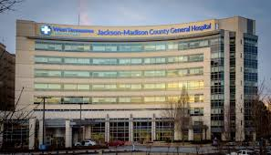

Moringa Hospital is a non-profit organization that is leading in medical expertise and service
provision, with
deservedly earned recognition throughout East Africa and beyond as an advanced diagnostic, treatment and
referral
centre. Investment in the latest technology and medical equipment has seen us establish leadership in
medical procedures
both in Kenya and beyond.

Dedication: We are dedicated to offering patients and their families efficient service and great value for their
money.
Empathy: We are devoted to providing a warm, friendly and caring environment in which patients can recover.
Inspiration: We are an organization that inspires our staff to achieve the extraordinary and develop the best
careers.
Quality: We pursue superior performance and quality in all we do, to build and preserve the Hospital’s clinical,
organizational and financial strength.
Partnerships: We recognize the value of strong internal and external partnerships to accomplish our goals.